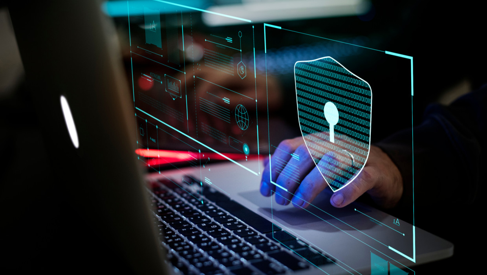

La seguridad informática es esencial para prevenir ataques e intentos de phishing, robo de información, vulneraciones de seguridad y destrucción de la propiedad. Cada vez existe un riesgo mayor para todo tipo de dispositivos, incluidos tablets y móviles, puesto que ahora estos aparatos almacenan más datos públicos y privados que la mayoría de ordenadores. Debido al crecimiento exponencial de los ciberataques durante el último año, la mayoría de empresas e individuos sufrirán interrupciones de su actividad y robo de datos.
